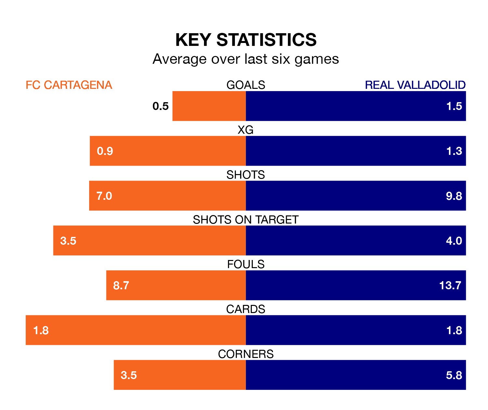

FC Cartagena host Real Valladolid on Sunday at the Estadio Municipal Cartagonova in the Segunda División.
In their last league match, on March 30, Cartagena drew with Leganés 0-0 away.
Valladolid also drew, 0-0 at home against Levante UD.
With 31 goals in 33 games so far this season, Cartagena are scoring at below the league average rate with 0.9 goals per game. And they are conceding more than average, letting in 42 goals at a rate of 1.3 per game.
Valladolid, meanwhile, are above average scorers, with 1.2 goals per game, compared to a league average of 1.1. They have conceded 0.9 goals per game.
The visitors are sixth in the table after 33 games, of which they have won 15 and drawn seven, earning 52 points.
The home side are 10 places behind Valladolid in 16th, with 10 wins and nine draws putting them on 39 points.
In the last three years, Cartagena and Valladolid have played each other on three occasions. Valladolid won all of them.
Their last meeting was on September 16, when Valladolid won 1-0 at home.
Cartagena are in mixed form in the Segunda División, with two wins and two draws from their last six games.
With three wins and a draw over that period, Valladolid's form is slightly better – they have taken 10 points from 18, compared to Cartagena's eight.
Updated: 16:41 (UTC), 04/04/24